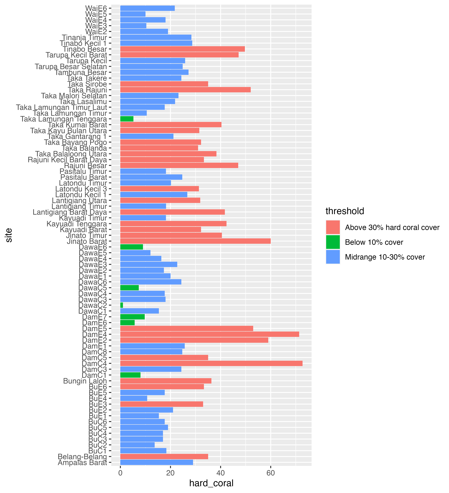
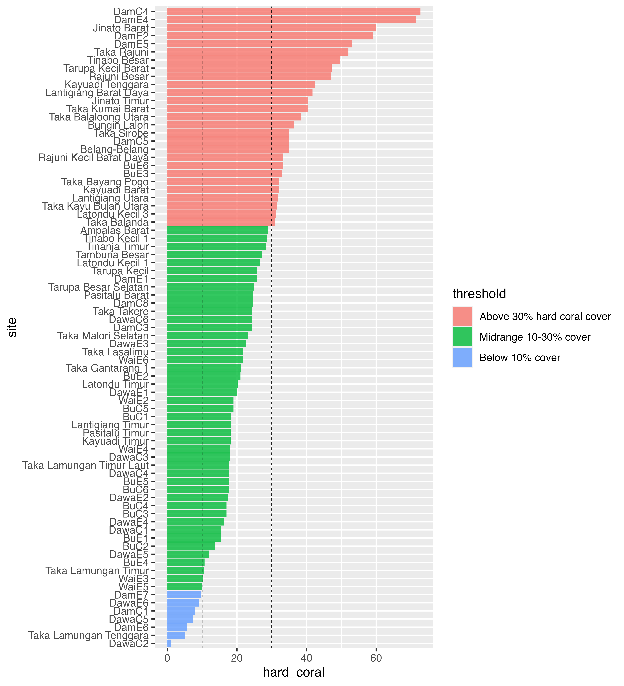
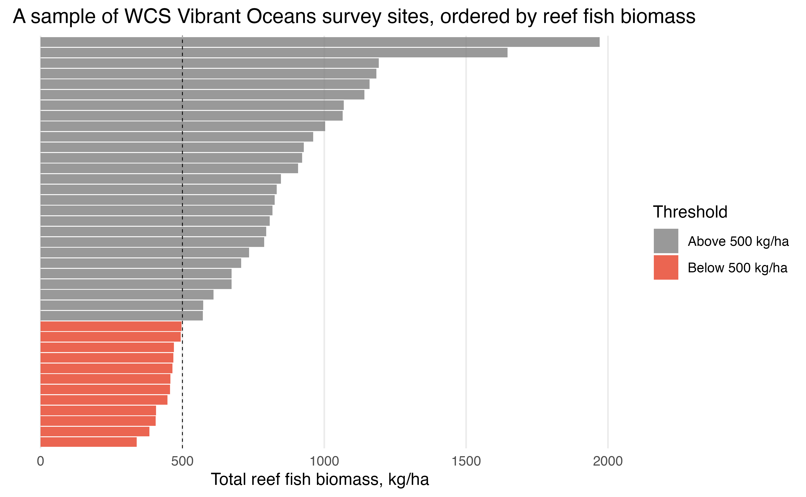

WCS Vibrant Oceans Baseline Coral Reef Monitoring
Source:vignettes/articles/vo_baseline_monitoring.Rmd
vo_baseline_monitoring.RmdThis case study follows an analysis of baseline coral reef studies for Vibrant Oceans, completed by the Wildlife Conservation Society (WCS). The original survey and analysis covered 168 sites across Tanzania, Fiji, and Indonesia, surveying underwater information across a diversity of management, habitat types, and other environmental characteristics. This analysis is a small subset, only using publicly available data, and intended to illustrate the usage of mermaidr for such a project.
First, we load mermaidr and search for projects tagged with “Vibrant Oceans”:
library(mermaidr)
vo_projects <- mermaid_search_projects(tags = "Vibrant Oceans")
vo_projects
#> # A tibble: 5 x 14
#> id name countries num_sites tags notes status data_policy_bel…
#> <chr> <chr> <chr> <int> <chr> <chr> <chr> <chr>
#> 1 3a9ecb7… Aceh Jaya … Indonesia 18 Vibran… "" Open Private
#> 2 507d1af… Karimunjaw… Indonesia 43 Vibran… "" Open Private
#> 3 95e0ffc… 2019_Dama … Fiji 44 Vibran… "" Open Private
#> 4 a93b43f… Tanzania V… Tanzania 24 Vibran… "" Open Private
#> 5 bcb1f11… Taka Boner… Indonesia 39 Vibran… "" Open Public Summary
#> # … with 6 more variables: data_policy_benthiclit <chr>,
#> # data_policy_benthicpit <chr>, data_policy_habitatcomplexity <chr>,
#> # data_policy_bleachingqc <chr>, created_on <chr>, updated_on <chr>For this analysis, WCS field teams accessed ecological condition using underwater surveys to assess two key indicators of coral reef health: live hard coral cover and reef fish biomass. This data is available from mermaidr via the benthic PIT and fishbelt methods, respectively. We’ll focus on projects that have summary data publicly available for these methods.
We are able to see the data policy of projects and methods by looking at the data_policy_* columns of vo_projects. For example, focusing on benthic PIT and fishbelt, we can see that the Taka Bonerate NP-2019 project has summary data publicly available for fishbelt and benthic PIT, while the 2019 Dama Bureta Waibula and Dawasamu-WISH ecological survey has public data available for only benthic PIT.
library(tidyverse)
vo_projects %>%
select(name, data_policy_beltfish, data_policy_benthicpit)
#> # A tibble: 5 x 3
#> name data_policy_beltfi… data_policy_benthi…
#> <chr> <chr> <chr>
#> 1 Aceh Jaya MPA 2020 Private Private
#> 2 Karimunjawa NP 2019 Private Private
#> 3 2019_Dama Bureta Waibula and Dawasamu… Private Public Summary
#> 4 Tanzania Vibrant Oceans 2019 Private Private
#> 5 Taka Bonerate NP-2019 Public Summary Public SummaryLive hard coral cover
We’ll focus on hard coral (benthic PIT) data first. We can get this data by filtering for projects that have publicly available summary data for it (returning both the Taka Bonerate and Dama Bureta Waibula and Dawasamu projects):
projects_public_benthic <- vo_projects %>%
filter(data_policy_benthicpit == "Public Summary")
projects_public_benthic %>%
select(name)
#> # A tibble: 2 x 1
#> name
#> <chr>
#> 1 2019_Dama Bureta Waibula and Dawasamu-WISH ecological survey
#> 2 Taka Bonerate NP-2019And then by querying for public summary data, using mermaid_get_project_data(), specifying the “benthicpit” method with “sampleevents” data. The key to accessing public summary data is to set our token to NULL - this makes it so that mermaidr won’t try to authenticate us, and instead just returns the data if the data policy allows it.
benthic_data <- projects_public_benthic %>%
mermaid_get_project_data("benthicpit", "sampleevents", token = NULL)
head(benthic_data)
#> # A tibble: 6 x 42
#> project tags country site latitude longitude reef_type reef_zone
#> <chr> <chr> <chr> <chr> <dbl> <dbl> <chr> <chr>
#> 1 2019_Dama Buret… WCS Fij… Fiji BuC1 -17.6 179. fringing fore reef
#> 2 2019_Dama Buret… WCS Fij… Fiji BuC2 -17.7 179. fringing fore reef
#> 3 2019_Dama Buret… WCS Fij… Fiji BuC3 -17.6 179. fringing fore reef
#> 4 2019_Dama Buret… WCS Fij… Fiji BuC4 -17.7 179. fringing fore reef
#> 5 2019_Dama Buret… WCS Fij… Fiji BuC5 -17.6 179. fringing fore reef
#> 6 2019_Dama Buret… WCS Fij… Fiji BuC6 -17.7 179. fringing fore reef
#> # … with 34 more variables: reef_exposure <chr>, tide <chr>, current <chr>,
#> # visibility <chr>, aca_geomorphic <chr>, aca_benthic <chr>,
#> # management <chr>, management_secondary <chr>, management_est_year <int>,
#> # management_size <lgl>, management_parties <chr>,
#> # management_compliance <chr>, management_rules <chr>, sample_date <date>,
#> # depth_avg <dbl>, percent_cover_benthic_category_avg_sand <dbl>,
#> # percent_cover_benthic_category_avg_rubble <dbl>,
#> # percent_cover_benthic_category_avg_hard_coral <dbl>,
#> # percent_cover_benthic_category_avg_macroalgae <dbl>,
#> # percent_cover_benthic_category_avg_soft_coral <dbl>, …At a high level, this returns the aggregations for a survey at the sample event level; roughly, it provides a summary of all observations for all transects at a given site and date, giving us information like the average percent cover for each benthic category. Let’s focus in on the country, site, and percent_cover_benthic_category_avg_hard_coral columns.
benthic_data <- benthic_data %>%
select(country, site, hard_coral = percent_cover_benthic_category_avg_hard_coral)We’d like to summarise hard coral coverage across these sites. WCS considers a 10% cover as a minimum threshold of carbonate production and reef growth, while 30% cover may be more related to a threshold for biodiversity and fisheries production, so we will aggregate and visualize the coverage.
First, let’s categorize each value of hard_coral according to whether it’s below 10%, between 10% and 30%, or above 30%:
benthic_data <- benthic_data %>%
mutate(threshold = case_when(
hard_coral < 10 ~ "Below 10% cover",
hard_coral >= 10 & hard_coral < 30 ~ "Midrange 10-30% cover",
hard_coral >= 30 ~ "Above 30% hard coral cover"
))We can count how many fall into each category - it looks like the bulk of sites (57%) fall into the midrange 10 - 30% cover category, a small number (8.9%) are below 10%, and about a third (34.2%) of surveyed sites have above 30% hard coral cover.
benthic_data %>%
count(threshold) %>%
mutate(prop = n / sum(n))
#> # A tibble: 3 x 3
#> threshold n prop
#> <chr> <int> <dbl>
#> 1 Above 30% hard coral cover 27 0.342
#> 2 Below 10% cover 7 0.0886
#> 3 Midrange 10-30% cover 45 0.570We’d also like to see the distribution of these values - for example, what do those 10 - 30% coverages actually look like?
Let’s visualize the data, using ggplot2:

This is a good start, but it would probably be much more useful with a few changes. We can recorder the sites so that they go in descending order, from highest to lowest hard coral coverage. We can also rearrange the threshold legend, so that it follows a logical order, from highest to lowest coverage (instead of alphabetical). It would also be helpful to add a line at the 10% and 30% points, to visualize those thresholds more explicitly.
benthic_data <- benthic_data %>%
mutate(
threshold = fct_reorder(threshold, hard_coral, .desc = TRUE),
site = fct_reorder(site, hard_coral)
)
hard_coral_plot <- ggplot(benthic_data) +
geom_col(aes(x = hard_coral, y = site, fill = threshold), alpha = 0.8) +
geom_vline(xintercept = 10, linetype = "dashed", size = 0.25) +
geom_vline(xintercept = 30, linetype = "dashed", size = 0.25)
hard_coral_plot
Finally, we can make some visual changes, like updating the theme, removing the site names (we care more about the distribution than which site they correspond to for this plot), adding axis labels for every 10%, cleaning up labels, and some other fiddly bits to create a beautiful plot!
hard_coral_plot <- hard_coral_plot +
scale_x_continuous(name = "Hard coral cover, %", breaks = seq(0, 70, 10)) +
scale_y_discrete(name = NULL) +
scale_fill_manual(name = "Threshold", values = c("#7F7F7F", "#F1A83B", "#E73F25")) +
labs(title = "A sample of WCS Vibrant Oceans survey sites, ordered by hard coral cover") +
theme_minimal() +
theme(
axis.text.y = element_blank(),
panel.grid.minor = element_blank(),
panel.grid.major.y = element_blank()
)
hard_coral_plot
That looks much better!
Reef fish biomass
Next, let’s turn to reef fish biomass. Similarly to the step above, we can get this data by filtering for projects that have publicly available summary data for it, returning only the Taka Bonerate project.
projects_public_fishbelt <- vo_projects %>%
filter(data_policy_beltfish == "Public Summary")
projects_public_fishbelt %>%
select(name)
#> # A tibble: 1 x 1
#> name
#> <chr>
#> 1 Taka Bonerate NP-2019Next, we query for public summary data, again using mermaid_get_project_data to get “sampleevents” data, this time specifying the “fishbelt” method:
fishbelt_data <- projects_public_fishbelt %>%
mermaid_get_project_data("fishbelt", "sampleevents", token = NULL)
head(fishbelt_data)
#> # A tibble: 6 x 93
#> project tags country site latitude longitude reef_type reef_zone
#> <chr> <chr> <chr> <chr> <dbl> <dbl> <chr> <chr>
#> 1 Taka Boner… WCS Indone… Indone… Ampala… -6.92 121. atoll back reef
#> 2 Taka Boner… WCS Indone… Indone… Belang… -6.40 121. atoll fore reef
#> 3 Taka Boner… WCS Indone… Indone… Bungin… -6.82 121. atoll fore reef
#> 4 Taka Boner… WCS Indone… Indone… Jinato… -6.77 121. atoll fore reef
#> 5 Taka Boner… WCS Indone… Indone… Jinato… -6.76 121. atoll back reef
#> 6 Taka Boner… WCS Indone… Indone… Kayuad… -6.81 121. fringing fore reef
#> # … with 85 more variables: reef_exposure <chr>, tide <chr>, current <chr>,
#> # visibility <chr>, aca_geomorphic <chr>, aca_benthic <chr>,
#> # management <chr>, management_secondary <chr>, management_est_year <int>,
#> # management_size <lgl>, management_parties <chr>,
#> # management_compliance <chr>, management_rules <chr>, sample_date <date>,
#> # depth_avg <dbl>, biomass_kgha_avg <dbl>,
#> # biomass_kgha_trophic_group_avg_omnivore <dbl>,
#> # biomass_kgha_trophic_group_avg_piscivore <dbl>,
#> # biomass_kgha_trophic_group_avg_planktivore <dbl>,
#> # biomass_kgha_trophic_group_avg_invertivore_mobile <dbl>, …Again, this summarises all observations for all transects at a given site and date, and gives us information like the average biomass at that site, and average biomass across groupings like trophic group or fish family.
We’ll just focus on the average biomass:
fishbelt_data <- fishbelt_data %>%
select(country, site, biomass = biomass_kgha_avg)WCS considers 500 kg/ha as a threshold where below this biomass, ecosystems may pass critical thresholds of ecosystem decline, and often seek to maintain reef fish biomass above 500 kg/ha as a management target. Let’s categorize each value of biomass according to whether it’s above or below 500 kg/ha, and reorder both the sites and the threshold factor from highest to lowest biomass:
fishbelt_data <- fishbelt_data %>%
mutate(
threshold = case_when(
biomass >= 500 ~ "Above 500 kg/ha",
biomass < 500 ~ "Below 500 kg/ha"
),
threshold = fct_reorder(threshold, biomass, .desc = TRUE),
site = fct_reorder(site, biomass)
)Then, we can visualize the distribution of average biomass in sites, similar to our visualization before:
ggplot(fishbelt_data) +
geom_col(aes(x = biomass, y = site, fill = threshold), alpha = 0.8) +
geom_vline(xintercept = 500, linetype = "dashed", size = 0.25) +
scale_x_continuous(name = "Total reef fish biomass, kg/ha") +
scale_y_discrete(name = NULL) +
scale_fill_manual(name = "Threshold", values = c("#7F7F7F", "#E73F25")) +
labs(title = "A sample of WCS Vibrant Oceans survey sites, ordered by reef fish biomass") +
theme_minimal() +
theme(
axis.text.y = element_blank(),
panel.grid.minor = element_blank(),
panel.grid.major.y = element_blank()
)